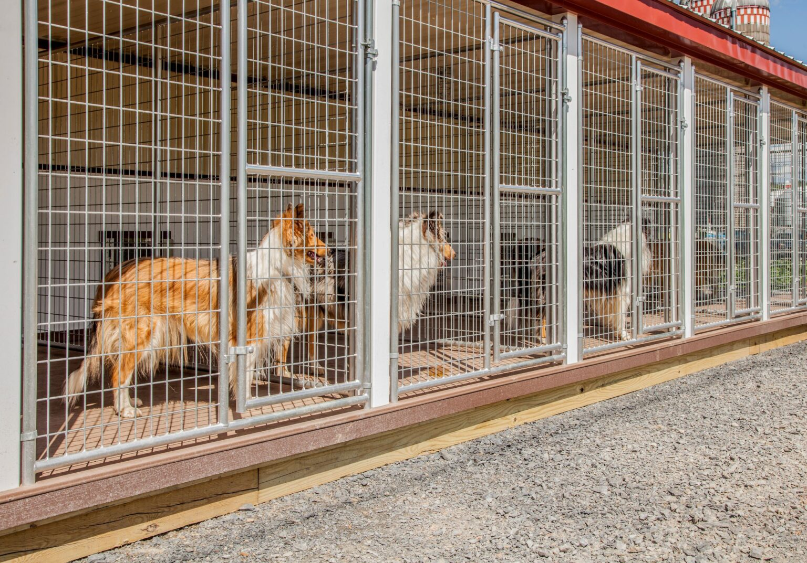

About Us
The Community Pet Adoption Center is a local shelter that finds permanent homes for dogs and cats. Every animal we take in is examined by a veterinarian, vaccinated, and spayed or neutered before it is placed for adoption.

How to Adopt
- Browse the pets currently available on our Available Pets page.
- Visit the shelter and meet the animal in person.
- Complete an adoption application and pay the adoption fee.
What We Provide
- Vaccinations and a veterinary health check
- Spay and neuter services
- Microchip registration
Learn More
For general background on how shelters operate, see the Animal shelter article on Wikipedia.